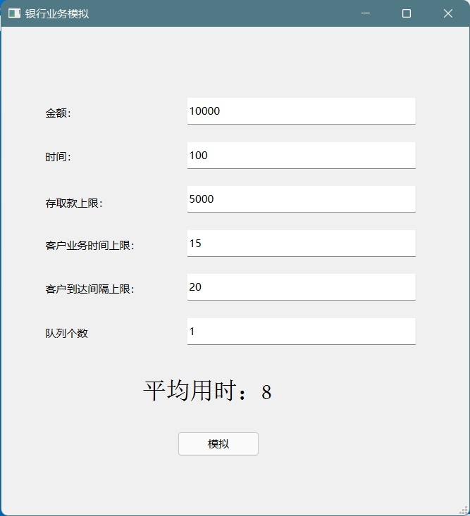
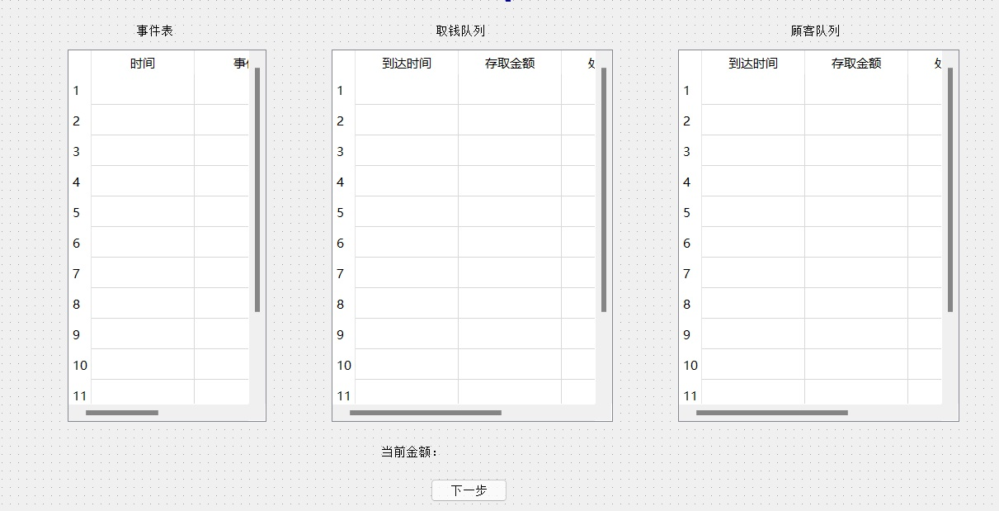
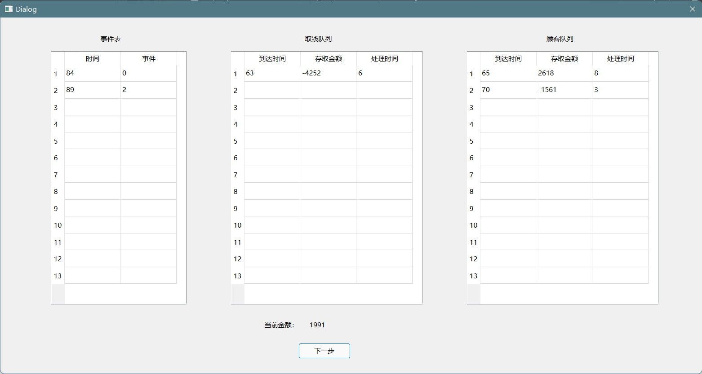

离散事件模拟实验报告（银行业务模拟）
完成了实验基本要求、图形化界面、实验附加要求：多个第一种队列的服务窗口，通过输入数字确定数量
实验要求
实验基本要求

在此基础上实现图形化界面
实验附加要求
实现：多个第一种队列的服务窗口，通过输入数字确定数量（3 分）
设计思路
事件表与客户队列
将银行中发生的事件分为两类，到达事件和离开事件，使用队列数据结构来存储事件表，队列中从队头到队尾依次按照事件发生的时间顺序进行排列，每次出队时队头即为下一个发生的事件
将客户队列也使用队列数据结构进行存储，后来的客户直接入队，这样可以保证队列中先来后到的顺序
开始时向事件表中添加到达事件，在处理每一个到达事件时添加下一个到达事件。当客户队列非空时向事件表中添加离开事件，当处理离开事件时如果客户队列仍非空添加下一个离开事件，这样即可完成事件的驱动。
在处理客户时，若申请金额超出银行资金，则将其排入第二个队列等候。在每一个客户离开时统计其完成业务的等待时间，当银行营业结束后输出最终结果。
队列数据结构的实现
/**
* @brief 队列的基本节点
* @details data数组在客户队列中存储[0]-ArrivalTime [1]-money [2]-duration
* @details data数组在事件队列中存储[0]-OccurTime [1]-Type
*/
typedef struct QNode
{
QNode();
QNode(int(&data)[3]);
int data[3];
QNode* next;
} QNode, * QuenePtr;
typedef struct LinkQunene
{
LinkQunene();
QuenePtr front;
QuenePtr rear;
} LinkQunene;
class Quene
{
public:
Quene();
void enQuene(int(&data)[3]);
void deQuene(int(&data)[3]);
/**
* @brief 根据data[0]中存储的值升序排列
*/
void enQueneInOrder(int(&data)[3]);
void moveFrontToRear();
int getLength();
QNode* getFront();
void print();
~Quene();
private:
LinkQunene quene;
int length;
};实现了队列节点QNode，队列LinkQuene，以及队列数据类型Quene
Quene中包含入队、出队、按序入队、获得长度、获得头节点、输出队列信息等基本操作
银行类的实现
class Bank
{
public:
/**
* @brief 构造函数
* @details 存取金额范围为 [-moneyScope, moneyScope-1]
* @details 处理业务时间范围为 [1,durationScope]
* @details 到来间隔时间范围为 [1,intertimeScope]
* @param totalMoney 总金额
* @param closeTime 营业时间
* @param moneyScope 客户存取金额范围
* @param durationScope 客户处理业务时间范围
* @param intertimeScope 客户到来间隔时间范围
*/
Bank(const int totalMoney = 10000, const int closeTime = 100000, const int moneyScope = 5000, const int durationScope = 15, const int intertimeScope = 30);
/**
* @brief 处理事件
* @details data[1]存储事件种类Type，0-到达事件， 1-withdrawMoneyList离开事件，2-customerList1离开事件
* @deatils 事件的发生时间必须小于closeTime
*/
void handleEvent();
bool isEventListNotEmpty();
/**
* @brief 输出模拟结果
* @return 客户平均耗时
*/
int printResult();
/**
* @brief 输出当前银行状态
*/
void printCurrentCondition();
private:
/**
* @brief 总金额
*/
int totalMoney;
/**
* @brief 营业时间
*/
int closeTime;
/**
* @brief 客户总等待时间
*/
int totalTime;
/**
* @brief 客户总等待时间
*/
int customerNum;
bool dealingWithdrawMoneyList;
int moneyScope;
int durationScope;
int intertimeScope;
int bottomMoney;
Quene withdrawMoneyList;
Quene customerList1;
Quene eventList;
/**
* @brief 处理客户的离开事件
* @param leaveTime 离开事件的发生时间
* @param type 1-withdrawMoneyList 2-customerList1
*/
void departure(const int leaveTime, const int type);
void customerArrived(const int arriveTime);
/**
* @brief 检查并处理withdrawMoneyList中的客户
* @details 每次检查队头客户，若银行钱不够取则将将该客户排到队尾
* @details 直到所有客户都被检查一遍
* @details 或者银行钱已经少于上一个客户存钱之前的金额
* @param startTime 上一个存钱客户的离开时间
*/
void withdrawMoneyListCheck(const int startTime);
/**
* @brief 生成离开事件并插入事件表
* @details 插入的客户一定在队头
* @details 若银行钱足够并且能在营业时间完成则插入成功
* @param startTime 开始处理顾客的时间
* @param type 1-withdrawMoneyList 2-customerList1
* @return 0-插入成功 -1-银行缺钱 1-超出营业时间
*/
int generateLeaveEvent(const int startTime, const int type);
};银行类中存储了银行总金额、营业时间等信息,实现了事件处理、输出结果等基本功能。
附加功能的实现
Quene *customerList;
customerList = new Quene[listNum];
int getSmallerListNum();创建一个第一种队列的数组，并编写从中获取最短队列的函数
图形化界面的实现
通过qt实现图形化界面，对第一种队列数为1的情况做出具体的中间过程模拟
关键代码讲解
队列
void Quene::enQueneInOrder(int(&data)[3])
{
QuenePtr front = quene.front;
if (front == NULL)
{
enQuene(data);
}
else
{
QuenePtr node = new QNode(data);
if (node == NULL)
abort();
if (node->data[0] < front->data[0])
{
node->next = front;
quene.front = node;
}
else
{
QuenePtr pre = quene.front;
QuenePtr cur = pre->next;
while (cur)
{
if (pre->data[0] <= data[0] && data[0] <= cur->data[0])
break;
pre = cur;
cur = pre->next;
}
pre->next = node;
node->next = cur;
if (!cur)
quene.rear = node;
}
length++;
}
}队列数据结构中实现了通过逐个比较队列中节点的data域来寻找入队时合适的插入位置，以便完成事件表的按序排列
void Quene::moveFrontToRear()
{
if (length > 1)
{
QuenePtr front = quene.front;
quene.front = front->next;
front->next = NULL;
quene.rear->next = front;
quene.rear = front;
}
}此处实现将队头节点移动到队尾，以便实现循环检测取钱的第二个队中是否有人可以取钱
银行类
Bank::Bank(const int totalMoney, const int closeTime, const int moneyScope, const int durationScope, const int intertimeScope) : totalMoney(totalMoney),
closeTime(closeTime), totalTime(0), customerNum(0), dealingWithdrawMoneyList(false), moneyScope(moneyScope), durationScope(durationScope),
intertimeScope(intertimeScope), bottomMoney(0)
{
//插入第一个到达事件
int arrive[3] = { 0, 0, 0 };
eventList.enQueneInOrder(arrive);
}构造函数中初始化银行总金额、营业时间、客户存取金额上限、客户办理业务时间上限、客户到达间隔上限，并插入第一个到达事件
void Bank::handleEvent()
{
int event[3];
eventList.deQuene(event);
switch (event[1])
{
case 0:
customerArrived(event[0]);
break;
case 1: case 2:
departure(event[0], event[1]);
break;
}
}事件处理函数中根据事件表头的事件类型进行处理，0代表到达事件，其它数字代表离开事件，并用不同数字来区分不同队列的离开事件
void Bank::customerArrived(const int arriveTime)
{
int money = rand() % moneyScope;
money = (rand() % 2) > 0 ? money : -money;
int duration = rand() % durationScope + 1;
int customer[3] = { arriveTime, money, duration };
//customerList1队尾插入新客户
customerList1.enQuene(customer);
int intertime = rand() % intertimeScope + 1;
//在营业结束前新客户到来则插入到来事件
if (arriveTime + intertime < closeTime)
{
int newarrive[3] = { arriveTime + intertime, 0, 0 };
eventList.enQueneInOrder(newarrive);
}
//若此时未处理取钱客户 且 customerList1仅有1位刚到达客户
//试图处理这位客户
if (!dealingWithdrawMoneyList && customerList1.getLength() == 1)
{
int condition = generateLeaveEvent(arriveTime, 2);
if (condition == -1)
{
int customer[3];
customerList1.deQuene(customer);
withdrawMoneyList.enQuene(customer);
}
}
}客户到达时调用该函数进行处理，随机生成客户存取金额，办理业务事件、下一客户到达时间，并将下一客户的到达事件插入事件表中，若该客户为当前排队的第一个客户则试图插入这位客户的离开事件
void Bank::departure(const int leaveTime, const int type)
{
int customer[3];
if (type == 1)
{
withdrawMoneyList.deQuene(customer);
dealingWithdrawMoneyList = false;
withdrawMoneyListCheck(leaveTime);
}
else if (type == 2)
customerList1.deQuene(customer);
else
{
abort();
}
//客户等待时间为离开时间-到达时间
totalTime += leaveTime - customer[0];
totalMoney += customer[1];
customerNum++;
if (customer[1] > 0)
{
bottomMoney = totalMoney - customer[1];
withdrawMoneyListCheck(leaveTime);
}
//若没有正在处理的客户
if (!dealingWithdrawMoneyList)
{
int condition;
//循环检查customerList1队头顾客并将银行钱不够取的顾客插入withdrawMoneyList
//直到队列为空
while ((customerList1.getLength() != 0) && (condition = generateLeaveEvent(leaveTime, 2)) == -1)
{
int customer[3];
customerList1.deQuene(customer);
withdrawMoneyList.enQuene(customer);
}
}
}客户离开时调用该函数进行处理，将对应客户出队，将客户办理业务事件存储，更新银行的金额，如果这个客户存钱则检查取钱队列中是否有客户可以满足，如果没有就插入下一个客户的离开事件
void Bank::withdrawMoneyListCheck(const int startTime)
{
if (withdrawMoneyList.getLength() == 0 || totalMoney <= bottomMoney || dealingWithdrawMoneyList)
return;
QuenePtr oldfirst = withdrawMoneyList.getFront();
do
{
int condition = generateLeaveEvent(startTime, 1);
if (condition == 0)
{
dealingWithdrawMoneyList = true;
break;
}
else
{
withdrawMoneyList.moveFrontToRear();
}
} while (withdrawMoneyList.getFront() != oldfirst);
}进行取钱客户队列的检查，如果队头的客户不能满足，则将队头客户排至队尾，直到发现可以满足的客户，或者整个队列循环一次为止。如果在处理过程中银行的钱已经少于开始处理时的钱，则剩下的客户必定不能满足，直接退出函数
int Bank::generateLeaveEvent(const int startTime, const int type)
{
QuenePtr front;
if (type == 1)
{
front = withdrawMoneyList.getFront();
}
else if (type == 2)
{
front = customerList1.getFront();
}
else
{
abort();
}
if (totalMoney + front->data[1] < 0) return -1;
if (startTime + front->data[2] >= closeTime) return 1;
int leave[3] = { startTime + front->data[2], type, 0 };
eventList.enQueneInOrder(leave);
return 0;
}检查当前银行的金额能否满足，处理所需时间是否超出银行营业时间，如果都符合要求则插入客户的离开事件
附加功能
int BankAdvanced::getSmallerListNum()
{
int min = customerList[0].getLength(), minNum = 2;
for (int i = 1; i < listNum; i++)
{
if (customerList[i].getLength() < min)
{
min = customerList[i].getLength();
minNum = i + 2;
}
}
return minNum;
}每次插入前获取最短队列，并插入到最短队列中
图形化的实现

void MainWindow::on_simulation_clicked()
{
int totalmoney = ui->totalmoney->text().toInt();
int closetime = ui->closetime->text().toInt();
int moneyscope = ui->moneyscope->text().toInt();
int durationscope = ui->durationscope->text().toInt();
int intertimescope = ui->intertimescope->text().toInt();
int listnum = ui->listnum->text().toInt();
if(listnum == 1)
{
this->hide();
Bank *bank = new Bank(totalmoney,closetime,moneyscope,durationscope,intertimescope);
Step *step=new Step();
step->setBank(bank);
step->show();
step->exec();
this->show();
while (bank->isEventListNotEmpty())
{
bank->handleEvent();
}
QString string = QString("平均用时：")+QString::number(bank->printResult());
ui->value->setText(string);
delete(bank);
}
else
{
BankAdvanced *bank = new BankAdvanced(totalmoney,closetime,moneyscope,durationscope,intertimescope,listnum);
while (bank->isEventListNotEmpty())
{
bank->handleEvent();
}
QString string = QString("平均用时：")+QString::number(bank->printResult());
ui->value->setText(string);
delete(bank);
}
}点击按钮后获取主界面中填入的参数并传入Bank类中得到结果后进行输出
如果设定的第一种队列个数为1，会打开中间模拟窗口，隐藏主窗口，待中间模拟窗口关闭后重新显示主窗口

void Step::on_nextStep_clicked()
{
if((bank->isEventListNotEmpty()))
{
bank->handleEvent();
ui->totalMoney->setText(QString::number(bank->totalMoney));
ui->eventList->clearContents();
ui->withdrawMoneyList->clearContents();
ui->customerList1->clearContents();
QNode *node;
node = bank->eventList.getFront();
for(int i=0;node&&i<13;i++)
{
ui->eventList->setItem(i,0,new QTableWidgetItem(QString::number(node->data[0])));
ui->eventList->setItem(i,1,new QTableWidgetItem(QString::number(node->data[1])));
node=node->next;
}
node = bank->withdrawMoneyList.getFront();
for(int i=0;node&&i<13;i++)
{
ui->withdrawMoneyList->setItem(i,0,new QTableWidgetItem(QString::number(node->data[0])));
ui->withdrawMoneyList->setItem(i,1,new QTableWidgetItem(QString::number(node->data[1])));
ui->withdrawMoneyList->setItem(i,2,new QTableWidgetItem(QString::number(node->data[2])));
node=node->next;
}
node = bank->customerList1.getFront();
for(int i=0;node&&i<13;i++)
{
ui->customerList1->setItem(i,0,new QTableWidgetItem(QString::number(node->data[0])));
ui->customerList1->setItem(i,1,new QTableWidgetItem(QString::number(node->data[1])));
ui->customerList1->setItem(i,2,new QTableWidgetItem(QString::number(node->data[2])));
node=node->next;
}
}
else
accept();
}点击按钮时会进行下一个事件的处理，并将事件处理后的结果显示
调试分析
时间复杂度
在银行金额充足的情况下，每个客户只需要被遍历一遍即可完成处理，时间复杂度为O(n)，但在银行金额不够大多数用户取时，每有一个用户存钱，就会遍历整个取钱队列，最差时间复杂度为O(n^n)
空间复杂度
每个客户只需要一个节点进行存储，每个客户分别对应一个到达事件和一个离开事件，空间复杂度为O(n)
遇到的bug
bug1
- bug内容：在尝试让队头的客户排到队尾时陷入死循环
- bug原因：每次将队头的空间释放后重新申请空间创建节点插入队尾，导致无法判断整个队列是否循环一次
- 解决方案：不进行空间的释放和重新申请，通过指针的改变直接改变队列的结构，以便通过节点的地址判断是否循环一次
bug2
- bug内容：队列中只有1个客户时，让队头的客户排到队尾时发生空指针异常
- bug原因：队列只有一个客户时无法将自身插入到自身的后面
- 解决方案：对队列中只有1个客户的情况进行单独判断
代码测试
运行状态测试
参数为：银行总金额 = 10000, 营业时间 = 100, 客户存取金额上限 = 5000, 客户办理业务时间上限 = 15, 客户到达间隔上限 = 30
event list:
(0,0,0)
customerList1:
withdrawMoneyList:
totalMoney:10000
totalTime:0
customerNum:0
dealingWithdrawMoneyList:0
event list:
(5,2,0)
(11,0,0)
customerList1:
(0,41,5)
withdrawMoneyList:
totalMoney:10000
totalTime:0
customerNum:0
dealingWithdrawMoneyList:0
event list:
(11,0,0)
customerList1:
withdrawMoneyList:
totalMoney:10041
totalTime:5
customerNum:1
dealingWithdrawMoneyList:0
event list:
(15,2,0)
(30,0,0)
customerList1:
(11,-4169,4)
withdrawMoneyList:
totalMoney:10041
totalTime:5
customerNum:1
dealingWithdrawMoneyList:0
event list:
(30,0,0)
customerList1:
withdrawMoneyList:
totalMoney:5872
totalTime:9
customerNum:2
dealingWithdrawMoneyList:0
event list:
(36,0,0)
(36,2,0)
customerList1:
(30,-1962,6)
withdrawMoneyList:
totalMoney:5872
totalTime:9
customerNum:2
dealingWithdrawMoneyList:0
event list:
(36,2,0)
(48,0,0)
customerList1:
(30,-1962,6)
(36,3281,2)
withdrawMoneyList:
totalMoney:5872
totalTime:9
customerNum:2
dealingWithdrawMoneyList:0
event list:
(38,2,0)
(48,0,0)
customerList1:
(36,3281,2)
withdrawMoneyList:
totalMoney:3910
totalTime:15
customerNum:3
dealingWithdrawMoneyList:0
event list:
(48,0,0)
customerList1:
withdrawMoneyList:
totalMoney:7191
totalTime:17
customerNum:4
dealingWithdrawMoneyList:0
event list:
(55,0,0)
(61,2,0)
customerList1:
(48,-2995,13)
withdrawMoneyList:
totalMoney:7191
totalTime:17
customerNum:4
dealingWithdrawMoneyList:0
event list:
(59,0,0)
(61,2,0)
customerList1:
(48,-2995,13)
(55,-2391,3)
withdrawMoneyList:
totalMoney:7191
totalTime:17
customerNum:4
dealingWithdrawMoneyList:0
event list:
(61,2,0)
(86,0,0)
customerList1:
(48,-2995,13)
(55,-2391,3)
(59,-292,7)
withdrawMoneyList:
totalMoney:7191
totalTime:17
customerNum:4
dealingWithdrawMoneyList:0
event list:
(64,2,0)
(86,0,0)
customerList1:
(55,-2391,3)
(59,-292,7)
withdrawMoneyList:
totalMoney:4196
totalTime:30
customerNum:5
dealingWithdrawMoneyList:0
event list:
(71,2,0)
(86,0,0)
customerList1:
(59,-292,7)
withdrawMoneyList:
totalMoney:1805
totalTime:39
customerNum:6
dealingWithdrawMoneyList:0
event list:
(86,0,0)
customerList1:
withdrawMoneyList:
totalMoney:1513
totalTime:51
customerNum:7
dealingWithdrawMoneyList:0
event list:
(89,2,0)
(93,0,0)
customerList1:
(86,4718,3)
withdrawMoneyList:
totalMoney:1513
totalTime:51
customerNum:7
dealingWithdrawMoneyList:0
event list:
(93,0,0)
customerList1:
withdrawMoneyList:
totalMoney:6231
totalTime:54
customerNum:8
dealingWithdrawMoneyList:0
event list:
customerList1:
(93,-4771,10)
withdrawMoneyList:
totalMoney:6231
totalTime:54
customerNum:8
dealingWithdrawMoneyList:0
6
BankingSimulation.exe (进程 7008)已退出，代码为 0。
按任意键关闭此窗口. . .程序运行中间状态正常
运行结果测试
测试1(单队列)
参数为：银行总金额 = 10000, 营业时间 = 100000, 客户存取金额上限 = 5000, 客户办理业务时间上限 = 15, 客户到达间隔上限 = 30
30
BankingSimulation.exe (进程 4284)已退出，代码为 0。
按任意键关闭此窗口. . .在客户到达间隔上限远大于办理业务时间上限时，平均处理时间趋近于客户到达间隔上限
测试2(单队列)
参数为：银行总金额 = 10000, 营业时间 = 100000, 客户存取金额上限 = 5000, 客户办理业务时间上限 = 15, 客户到达间隔上限 = 15
245
BankingSimulation.exe (进程 16512)已退出，代码为 0。
按任意键关闭此窗口. . .在客户到达间隔上限与办理业务时间上限接近时，平均处理时间远大于客户到达间隔上限
测试3(多队列)
参数为：银行总金额 = 10000, 营业时间 = 100000, 客户存取金额上限 = 5000, 客户办理业务时间上限 = 15, 客户到达间隔上限 = 15, 队列数 = 5
21
BankingSimulation.exe (进程 17852)已退出，代码为 0。
按任意键关闭此窗口. . .在第一种队列增加后，平均处理时间明显下降
图形化测试

程序能正常模拟出中间过程，并在窗口关闭后自动显示主界面
实验总结
通过这次实验，我熟练掌握了离散事件模拟的问题分析与算法设计，熟悉了队列数据结构的使用，学习了使用qt进行图形化的方法，并学习了自己设计参数进行测试的过程。通过编写这样一个小项目，提高了代码组织能力和问题的发现与解决能力，同时对于生活中的银行排队问题有了更深入的理解。
附录
Bank.h
Bank类头文件
Bank.cpp
Bank类的实现，程序的主要模拟功能部分
BankAdvanced.h
BankAdvanced类头文件
BankAdvanced.cpp
BankAdvanced类的实现，程序的附加模拟功能部分，实现多条第一种队列的模拟
Quene.h
Quene类的头文件
Quene.cpp
Quene类的实现，实现队列数据结构
step.h
step类头文件
step.cpp
step类的实现，使用QDialog实现过程模拟
step.ui
qtUi文件，实现过程模拟的界面
mainwindow.h
mainwindow类头文件
mainwindow.cpp
mainwindow类的实现，实现主界面
mainwindow.ui
qtUi文件，实现主界面
main.cpp
实现主函数，调用mainwindow